Stochastory
A project by Kiran McCulloch
Examples
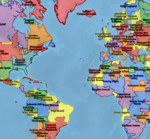
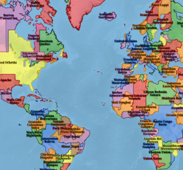
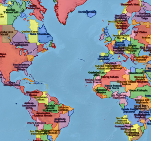
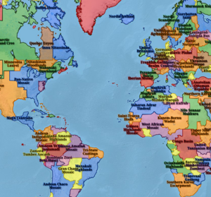
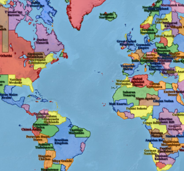
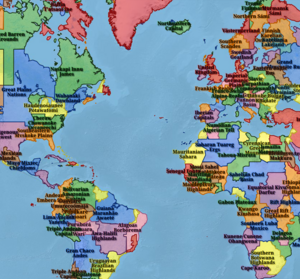
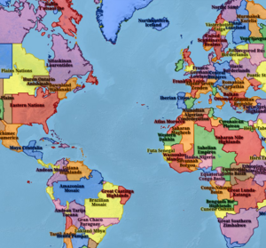
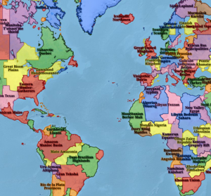
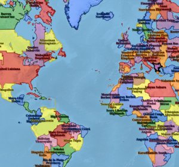
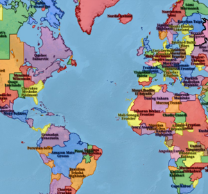
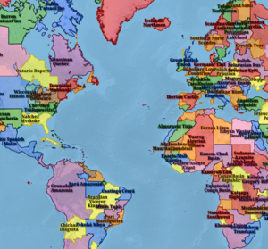
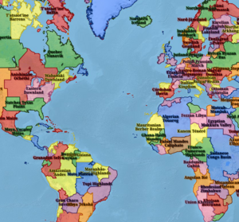
About This Project
Overview
The strengths of Large Language Models lie in their flexibility, their natural-language
input, and their
plausible-sounding output - the word plausible being chosen intentionally, since one of
their biggest
drawbacks is their propensity to lie. While these "hallucinations" can certainly be
frustrating if one
is using generative AI for real-world tasks, and could be outright dangerous for the user
that accepts
their advice blindly, there are two use cases that came to my mind that can mitigate these
downsides.
One is coding: whether or not an LLM's code is valid or not can be checked simply and
conclusively by
running it (optimization notwithstanding.) The other is for entirely fictional data: all it
has to do is
sound realistic enough, and LLMs excel at that.
So to marry these strengths of Generative AI with the antidotes for its weaknesses, and to
indulge my
love of history and cartography, I have created Stochastory, an alternate history generator.
This
program draws on real-world geography, political boundaries, and historical entities,
breaking them
apart before mixing and recombining them into something recognizable but entirely new.
The result is a Python program, with GUI, that takes a basemap of small polygons as input
and outputs
not only a geojson file containing the world's randomly generated countries, complete with
dynamically
generated names and histories for each of them, but also an interactive webmap to show them
off.
How It Works
The program starts with a basemap geojson file, which is essentially the world's landmasses
split
along various existing lines, both places where borders are typically drawn - rivers, mountains,
and
lines of latitude and longitude - and places where they are already drawn, at both the national
and
sub-national level. After some basic cleanup (to deal with invalid geometries or small slivers
resulting from precision errors,) these small provinces are slowly combined together, so that
the
resulting polygons are guaranteed to have all of their borders defined by one or more of these
plausible boundaries. Islands are handled separately from continental landmasses to prevent the
algorithm from not finding enough neighboring polygons to merge.
Once enough small polygons have been merged, a second pass is done to merge them into
larger, country-sized shapes, but at this stage different weights are provided based on their
underlying continent, to nudge results closer towards the recognizable, but also to provide
regional
variety in country sizing - the results were far too homogeneous otherwise. Once all the final
polygons have been created, the flavoring can begin, whereby the script checks each new country
against a large list of features, from current countries and subdivisions, to historical
empires, to
indigenous tribes, to vaguely defined regions, to urban areas of major cities. With these
weights in
place, its sends the data to ELM, which generates names based on this data, and, after another
step
getting the names of each country's neighbors, the data is once again passed to ELM to write a
short
history of the country in question. From here, it's just a simple matter of one last Python
script
utilizing Folium to put everything into a Leaflet webmap and style it.
Creation Process
I used ELM's Qwen model extensively to write and edit Python code. It was most useful in terms
of iterating quickly - the fact that one can interface with a code editor using natural language
is, honestly, invaluable for managing and acting on ideas. I also found it very helpful in terms
of diagnosing error messages, and it was particularly useful in rewriting code, either to try
the same process in a slightly different way or to optimize an existing function. This came in
handy once the codebase starting getting unwieldily large, and going back through to tweak
something's inner working while keeping the functionality the same (for example, when I had to
make a routine multi-threaded to reduce computation time) would have taken too long and probably
introduced more bugs than it fixed. I did also have to do all my QGIS work on my own, and there
was a decent amount of cleanup to be done there.
This project took a while, and while part of that was having to clean up LLM output and tweak
its functionality when it took liberties with my prompting, I must admit that most of it was the
freedom that the process afforded me. I was able to go further more easily, and produce a more
robust, faster product at the end of it. Shortcomings aside, which I will discuss next, usage of
this technology allowed my creative process to take center stage and actual bug-wrangling and
busy work to take a backseat.
Shortfalls
LLMs are far from perfect, and ELM is no exception. It had a tendency to follow its own
instructions more than mine, and at times the code would actually lose functionality the more I
iterated on it, especially if I wanted to try multiple approaches, since ELM would start to
"forget" what the actual goal of the program was. I also ended up writing most of the HTML/CSS
myself, since it was far faster than waiting for ELM's responses every time I wanted to tweak
something minor, and Folium's restrictions meant that there was necessarily a lot of manual
styling I could just write out and inject into the final output.
In terms of the dynamic content generated by ELM, the 'most likely output' model that LLMs
follow can become rather apparent when looking at enough examples. The histories tend to read
very similarly (the word "emerged" is ubiquitous) even though no example is provided in the
prompt. The names of the countries, similarly, are equally unoriginal, despite the amount of
prompting to "be creative." Despite natural language processing being the forefront of the
technology, most of the names are either sheer nonsense (look at China if you want a laugh) or
are the same format, every time. At the end of the day, creativity is just another vector in the
model, not something it can actually do.
Data Sources
As much of my data as possible came from Natural Earth, for consistency's sake:
Rivers:
https://www.naturalearthdata.com/downloads/50m-physical-vectors/50m-rivers-lake-centerlines/
Countries:
https://www.naturalearthdata.com/downloads/50m-cultural-vectors/50m-admin-0-countries-2/
Subdivisions:
https://www.naturalearthdata.com/downloads/50m-cultural-vectors/50m-admin-1-states-provinces/
Physical Features:
https://www.naturalearthdata.com/downloads/10m-physical-vectors/10m-physical-labels/
Graticules:
https://www.naturalearthdata.com/downloads/50m-physical-vectors/50m-graticules/
I got my historical data from this GitHub repository:
https://github.com/aourednik/historical-basemaps
I got the mountain ranges from the GMBA Mountain Inventory:
https://www.earthenv.org/mountains
I took my city data from the very comprehensively managed GHS-FUA R2019A:
https://human-settlement.emergency.copernicus.eu/ghs_fua.php